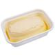

VOLTAR
Bolo de Milho de lata
Ingredientes:
1 lata de milho (sem o líquido)  1 lata de leite (medida da lata de milho)
1 lata de leite (medida da lata de milho)  1 lata de açúcar (medida da lata de milho)
1 lata de açúcar (medida da lata de milho)  1 lata de flocão de milho
1 lata de flocão de milho  1/2 lata de óleo de soja
1/2 lata de óleo de soja  3 ovos inteiros
3 ovos inteiros  1 colher (sopa) de fermento em pó
1 colher (sopa) de fermento em pó
margarina para untar  farinha de trigo para untar
farinha de trigo para untar
Modo de Preparo:
1 - Escorra o milho e use a própria lata para as medidas.
2 - Unte e enfarinhe uma forma de bolo com furo.
3 - Preaqueça o forno.
4 - Coloque no liquidificador o milho (já escorrido), o leite, açúcar, flocão de milho, óleo, ovos e bata bem até que o milho fique bem moído.
5 - Se quiser, pode acrescentar duas colheres de sopa de coco ralado.
6 - Acrescente o fermento em pó e pulse o liquidificador 3 vezes.
7 - Despeje essa massa na forma e leve ao forno médio.
8 - Deixe assar por, aproximadamente, 40 minutos.
9 - Faça o teste do palito e observe um tom dourado médio, para saber que o bolo está pronto.
10 - Espere esfriar totalmente para desenformar.

Olavo Santos
BOM APETITE!
VOLTAR